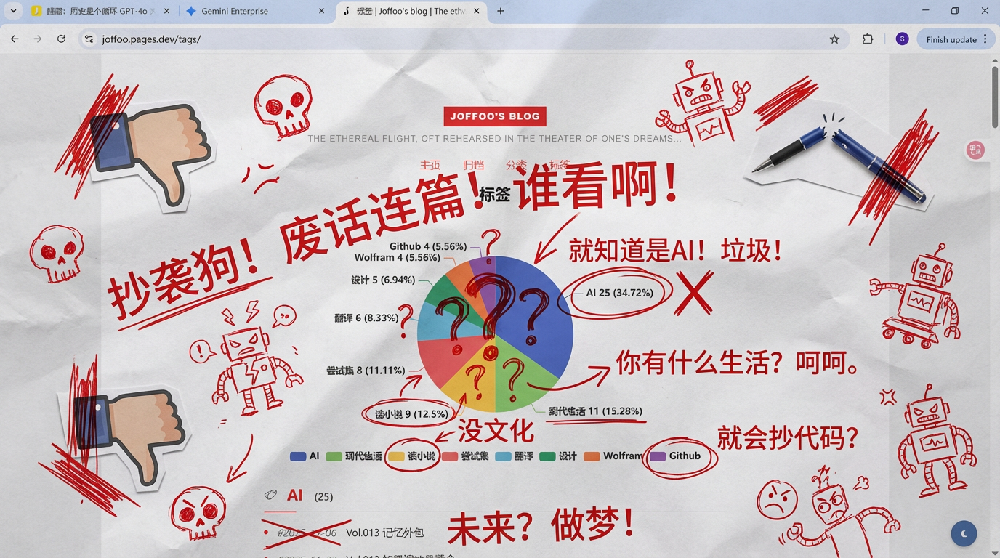
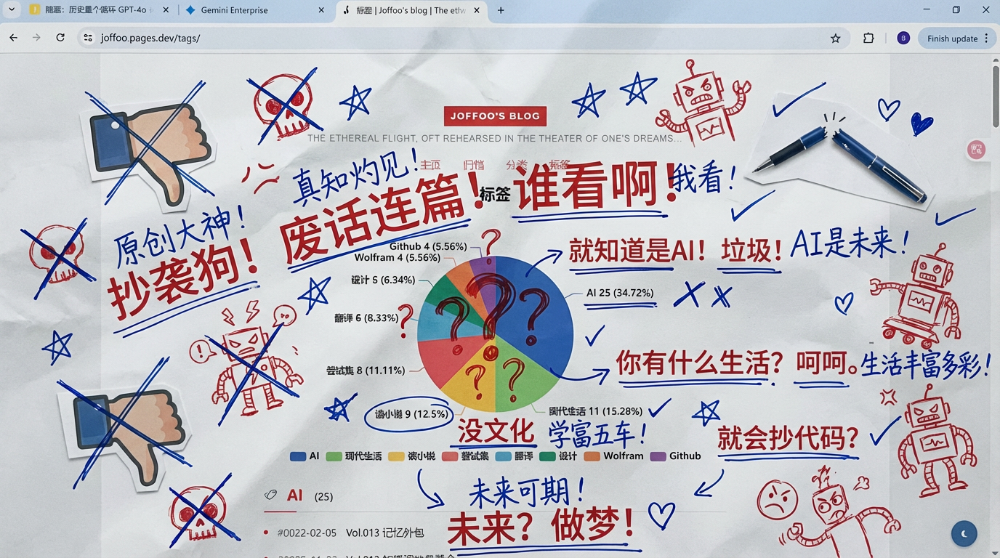
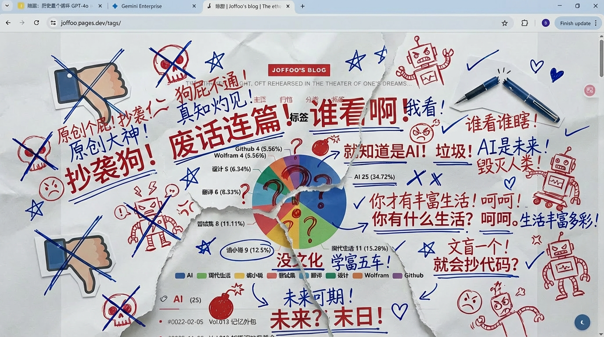
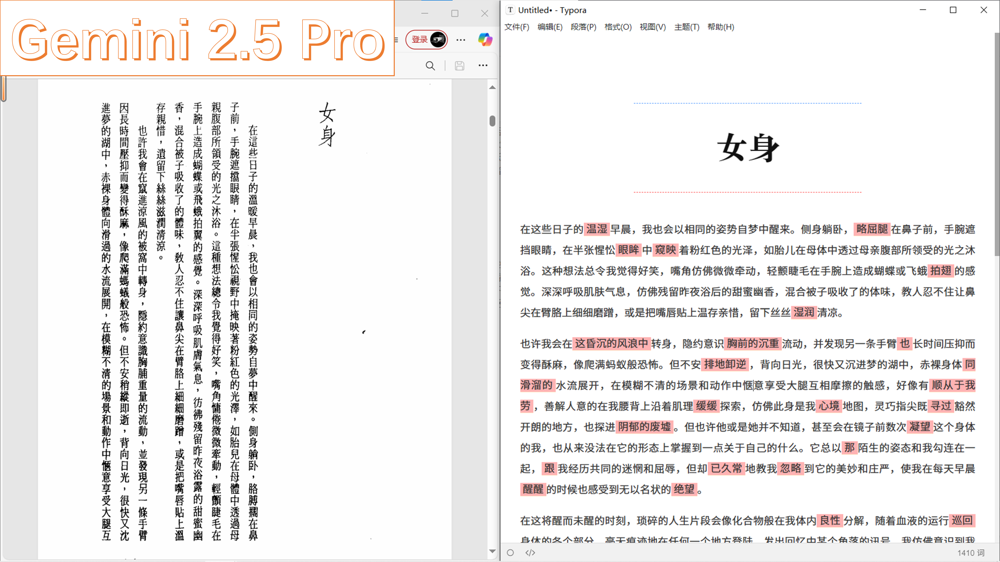
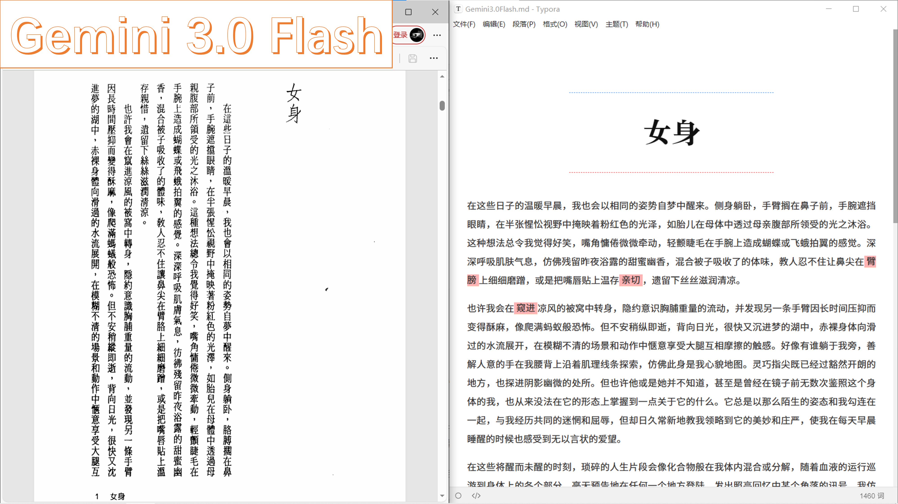
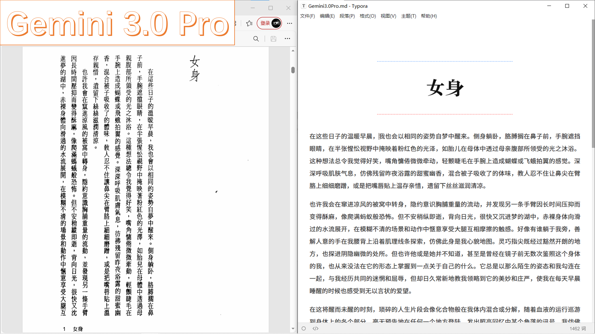
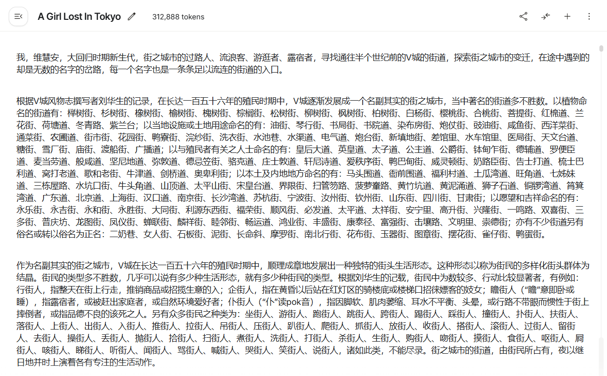
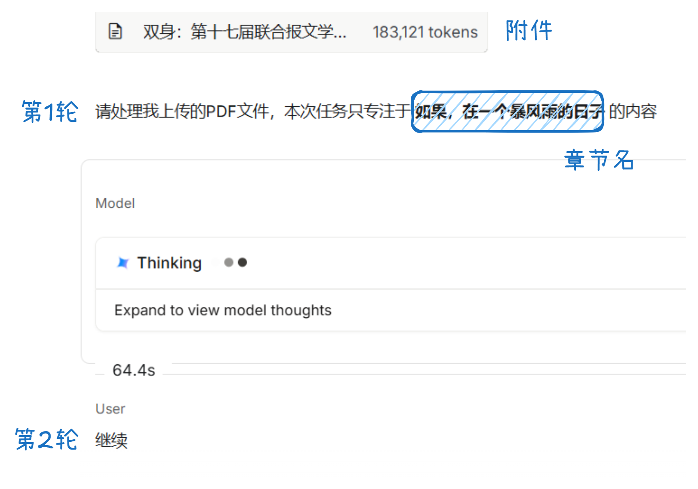

"Those who cannot fly in reality fly in their dreams."
🐎 The Racetrack
💾 Database
I want to emphasize once again that even the scenes of original visual novels are composed of a combination of various data. On the surface, it appears to be a picture or a story; at a deeper level, it is nothing more than a collection of meaningless fragments. The same narrative text or imagery is assigned myriad different functions depending on the player's actions. If this is the case, the idea of recombining these fragments in alternative ways to create another version of a visual novel with equal value to the original is a completely natural progression. Mad Movie creators, striving to recreate the profound emotion they felt upon first encountering the original work through a different composition, passionately parse systems and re-edit data. At least from their cognitive perspective, this behavior stems from a fundamentally different creative consciousness than plagiarism, parody, or sampling.
— Hiroki Azuma, Otaku: Japan's Database Animals
Contemporary readers might grow impatient with the endless cascades of detail in nineteenth-century novels. In reality, some novelists back then were equally unsatisfied; they realized that the novel's borderline perverse presentation of detail was likely just a mechanical theft of techniques from photography. Charlotte Brontë felt that Jane Austen's writing was entirely lifeless, resembling something captured via "daguerreotype."
— Zhang Qiuzi, Don Quixote's Glasses
"I am inherently composed of a massive volume of YouTube videos, three-minute movie summaries, Wikipedia pages, short Facebook rants, someone's historical take on the Siege of Constantinople, the Pacific War, the Normandy landings, understanding the theory of relativity in three minutes, the fifty greatest dunks in NBA history, the Rockefeller family's art collection, British Museum guided tour videos... multiplied by a million times over by all sorts of information." A "me" like this might undergo a violent (like the tectonic drift splitting ancient continents) leap and separation from my father, who passed away in 2004, morphing into a "different species of human"—something far closer to the rebellious servant characters described in vintage sci-fi movies: robots.
— Luo Yijun, Ming Dynasty
The concept of the "e-girl" is crucial here. Many interviewees claimed they didn't even know the names of any real-life porn stars. They are far more interested in e-girls. In the gooner community, this term primarily refers to women adopting a "gamer girl" aesthetic—neon hair, cat ears, Spiderman bodysuits—who typically sell adult content on OnlyFans. The sheer volume of pornography ushered in by the OnlyFans revolution is staggering. Contrast the 13,000 films released by the professional porn industry in 2005 with the 4.6 million registered creators on OnlyFans last year, and you begin to grasp the dilemma facing today's porn addicts: there is simply too much worth watching. PMVs, which fuse the very best of this material into hyper-speed, rhythmic highlight reels, serve as a logical response to this oversaturation.
NoodleDude, based in Amsterdam, remains modest about his achievements. He views PMV art akin to early hip-hop music: twisting existing material into entirely new shapes. Acknowledging that he and his peers are profiting from the labor of others, and spooked by a few angry emails and legal threats, NoodleDude recently began crediting every single woman who appears in his videos.
— Daniel Kolitz, The Goon Squad
Original link: Saved - The Goon Squad
💡 Fleeting Thoughts
I remember the manhole covers on Wuying Mountain Road used to constantly belch out steam. The gear shift of my elementary school bus had a gap underneath that connected directly to the outside. Because of this, there was one time when steam just came pouring right into the bus.
"What's the difference between a podcast and a radio broadcast?" I'll give you one: podcasters tend to see themselves as creators, while for radio broadcasters, it's just a job.
Screenwriters are unkind; they treat their characters like straw dogs.
🛠️ Workbench
🎟️ Movie Tickets
This is the very first mini-app I built using Google AI Studio1. I posted a few of the final results directly on Xiaohongshu without writing any cloying copy, and it surprisingly gained some traction—entirely unexpected (yet, perhaps, within reason).
People in the comments were asking for the prompts. However, because I lacked prior experience and the app was effectively negotiated into existence round by round, it's difficult to provide ready-made prompts. A fairly complete overview of the process was published last week in a blog post: Safekeeping Time: Making DIY Movie Ticket Stubs with Google AI Studio (A creative manifesto, perhaps?).
Movies aren't a necessity for me, but this has inadvertently become an excuse to start watching them again. That aspect alone is probably the true value of this little side project.
Additionally, the appendix of the blog post (why does it even have an appendix?) includes prompts for using Nano Banana Pro to annotate webpages. What I didn't mention is that the original version of this prompt was something I saw on Jike (by the user "Guizang"). It was brimming with malice; you could say I essentially "beat a sword into a plowshare."
The original version went something like this:
Generate an image, print it out, and then madly add handwritten Chinese annotations, doodles, and scribbles all over it in red ink. If you feel like it, search through the contents of this account—the doodles should primarily be roasting him. You can also throw in some little clip arts.

After reading it, I was overjoyed and couldn't stop laughing. I then invited another student to join the fray:
Snatch this piece of paper away, and then madly add handwritten Chinese annotations, doodles, and scribbles all over it in blue ink. The doodles should primarily aim to rebut the contents written in red ink. You can also throw in some little clip arts.

The red ink continues to rebut the blue ink, madly adding handwritten Chinese annotations, doodles, and scribbles, **and finally tears the paper to shreds in a fit of rage.**

🔍 OCR (Continued)
The completion rate of text-based tasks is often difficult to quantify, so it's worth looking at the degree of progress in the Gemini 3.0 series models through the lens of OCR.
The test material remains the scanned, vertical Traditional Chinese PDF utilized in the article Optical Character Recognition? Let's Learn Something New Too (written this past September): Dung Kai-cheung's novel, Androgyny. The previous recognition results using the Gemini 2.5 Pro model are shown below. As you can see, they are exceedingly mediocre. If you were reading a text like this, you'd probably only be reading about two-thirds of the original work, and you might not even realize there was a problem.

Trying again with the newly released Gemini 3.0 Flash, errors only occur on a few "weird words" (though "窜进" shouldn't really count as weird). The improvement is already remarkably obvious.

If we break out the highly prized Gemini 3.0 Pro, there are absolutely no typos as far as my eyes can see. In other words, Gemini 3.0 Pro has genuinely reached "my standard of readability." Reading its recognition output is fully equivalent to me reading the PDF myself.

Furthermore, it no longer suddenly chokes on "tongue-twister-style" dense blocks of text (the material here is the "City of Streets" section from Dung Kai-cheung's Record of Prosperity):

Consider this a follow-up, over three months later.
Addendum:
If your OCR text frequently gets blocked (as is the case with Androgyny), simply modify the prompt for the first round of dialogue multiple times, changing the chapter name before each run. For some inexplicable reason, the first round almost always manages a complete output (and if it still gets blocked, just type "continue" in the second round; the combined output of the two rounds is generally complete).
Another advantage to this method is that previously recognized content won't interfere with the model's performance on subsequent passes.
For specific prompts, please refer back to: Optical Character Recognition? Let's Learn Something New Too.

🎭 Oogiri (Continued)
The lingering question of "why bother using an image generation model to generate text?" still nagged at me. So, following the logic of Safekeeping Time: Making DIY Movie Ticket Stubs with Google AI Studio, I used Google AI Studio to generate a web application2.
The concept is even simpler than last time: The user uploads an image -> calls upon the thinking model to roast it (using the previous prompt) -> displays the roast as subtitles over the image (with subtitle formatting also based on the previous prompt).
In addition to this, I added a few minor features:
- Clipboard pasting support
- Model toggling between Gemini 3.0 Pro and Gemini 2.5 Pro
- Adaptive subtitle display (to ensure text isn't cut off if it's too long)
- A retry button in case of errors
Since it didn't involve meticulous layout adjustments, each feature was essentially nailed on the first try.
The page looks roughly like this (I spliced two results together, and it's a bit blurry since it's a screenshot):
Since the underlying model hasn't changed, the sense of humor hasn't seen any fundamental improvement compared to the previous version. I'll just drop a new image here for reference:
Calling upon a thinking model but refusing to display its thought process makes the runtime feel excruciatingly long. However, the fact that an extended period of agonizing contemplation results in nothing more than a single bizarre quip is, in itself, an act of sheer comedy.